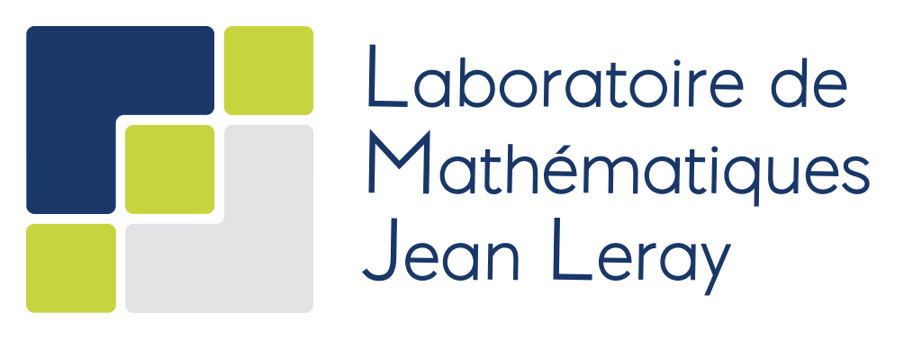

All lectures take place at the campus "Lombarderie/Michelet" of the University of Nantes, in the in Salle Eole at the ground floor of Building 10. Here is the approximate address of the building, and here is a detailed plan of the campus to precisely locate it. Lunches will be at the university cafeteria.
| Wednesday | Thursday | |
|---|---|---|
| 09:00 - 09:30 | Registration | |
| 09:30 - 10:30 | Gironella | Chakravarthy |
| 10:30 - 11:00 | Coffee break | Coffee break |
| 11:00 - 12:00 | Bertelson | Van Overschelde |
| 12:00 - 13:30 | Lunch | Lunch |
| 13:30 - 14:30 | Chantraine | Open questions |
| 14:30 - 15:00 | Coffee break | Coffee break |
| 15:00 - 16:00 | Sandon | Discussions |
| 16:00 - 20:00 | Discussions | |
| 20:00 - 22:30 | Dinner |
Available here.
Available here.
Nantes has an international airport and a train station that is well connected to Paris. (Note that Google Maps might not have accurate data on local transportation within Nantes; you can look up itineraries on the Naolib webpage.) Whereas the train station is located right in the city center, the airport is further away, and there are two options to get back to civilization from there.
We acknowledge support from Laboratoire de Mathématiques Jean Leray and Région Pays de la Loire.
